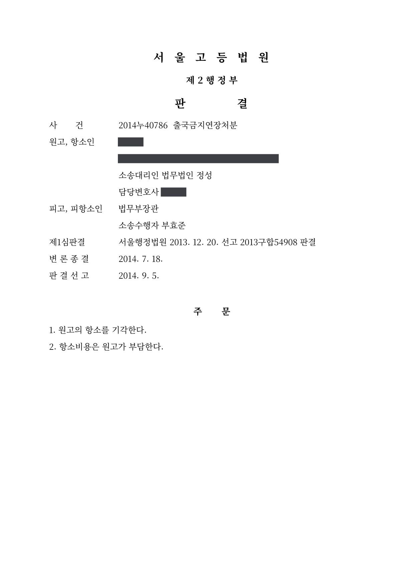

고액 체납자 출국금지 연장처분 취소소송 (1·2심)
서울행정법원 2013구합54908 · 서울고등법원 2014누40786 · 담당변호사 부효준
판결문


사건의 요지
4억 원이 넘는 국세를 체납하고 가족이 해외에 체류하는 등 재산의 해외 도피 우려가 있다는 이유로 한 출국금지 연장처분에 관하여, 출국금지 요건의 충족 여부와 비례원칙 위반 여부가 다투어진 사건입니다.
사건의 주요 내용
원고는 2001년경부터 종합소득세·부가가치세(일부는 다른 회사의 세금에 대한 제2차 납세의무)·근로소득세·증권거래세 등 합계 약 4억 8,400만 원의 국세를 체납하고 있었고, 그 가운데 제2차 납세의무를 제외한 약 3억 4,600만 원은 결손처리된 상태였습니다. 과세관청이 압류한 원고 소유 부동산은 선순위 채권이 많아 공매 실익이 없다는 이유로 공매 대행이 해제되었습니다.
과세관청은 2012년 4월, 원고가 4억 원이 넘는 국세를 체납한 고액상습체납자로서 압류·공매로는 체납액을 충당할 수 없고, 가족이 모두 해외에 체류 중이며, 2003년부터 2012년까지 약 152회 해외에 출입하여 은닉재산을 해외로 도피할 개연성이 있다는 이유로 출국금지를 요청하였습니다. 처분청은 6개월의 출국금지처분을 한 뒤 2012년 10월과 2013년 4월 각 6개월씩 기간을 연장하였습니다.
원고는 2013년 4월의 두 번째 연장처분의 취소를 구하는 소송을 제기하였고, 소송 중인 2013년 10월에도 다시 연장처분이 이루어졌습니다. 부효준 변호사는 1심과 항소심에서 처분청의 소송수행자로서 이 사건을 수행하였습니다.
쟁점
- 소송 중 출국금지기간이 만료된 연장처분의 취소를 구할 소의 이익이 있는지
- 100회 이상의 해외 출입을 업무상 출장과 가족 방문이라고 설명하는 체납자에게 재산의 해외 도피 우려가 인정되는지
- 회사 대표이사의 등기 명의와 급여 수령 명의를 가족으로 해 둔 사정이 해외 도피 우려 판단에서 어떻게 평가되는지
원고의 주장
- 원고는 소득이 적었던 시기에도 세금을 납부한 실적이 있고, 과세관청이 원고 소유 부동산을 압류하고 있어 조세채권의 집행이 어렵지 않다.
- 약 155회의 해외 출입은 해외에 체류하는 가족을 방문하거나 재직 중인 회사의 해외영업 업무를 위한 것이었고, 항공료와 체재비는 회사가 지원하였으며, 회사에서 받는 급여와 성과급·법인카드로 생활하면서 가족의 생계를 책임지고 있어 생활의 근거지를 해외로 옮길 수 없다.
- 원고가 보유한 신기술을 바탕으로 회사가 설립한 해외 법인의 영업과 기술 설명을 담당하고 있는데 출국금지로 회사의 해외 사업이 교착 상태에 빠졌고, 체납액을 납부하기 위해서도 해외를 오가며 영업을 해야 하므로 이 처분은 지나치게 가혹하여 재량권을 일탈·남용한 것이다.
부효준 변호사의 주장
- 원고는 2001년경부터 약 4억 8,000만 원의 세금을 체납하고 있고 원고 명의의 재산으로는 체납액을 충당할 수 없으며, 체납 뒤 2002년부터 2012년까지 100회 이상 출국하였고 가족이 모두 장기간 해외에 체류하고 있어 재산의 해외 도피 우려가 크다고 반박하였습니다.
- 원고는 자신이 실질적으로 운영하는 회사의 법인등기부상 대표이사를 가족 명의로 해 두고 재직 중인 회사의 급여도 가족 명의로 받으면서 월 370만 원의 급여와 연 매출액 3%의 성과급에 관한 소득신고를 누락하였으므로, 원고가 스스로 밝힌 급여 수령 방식 자체가 재산 은닉의 정황에 해당한다고 지적하였습니다.
- 항소심에서는 원고가 국세 체납 전에 자신의 임야를 가족에게 증여한 사실과 소득신고 누락 전력을 추가로 들어 재산 도피 우려를 뒷받침하였습니다.
법원의 판단
1심 법원은 먼저 직권으로 소의 이익을 살펴, 최초 처분 이후 공백 없이 출국금지처분이 반복되어 왔고 실제로 소송 중에도 다시 연장처분이 이루어졌으므로, 처분의 기간이 만료되었더라도 같은 사유로 위법한 처분이 반복될 위험이 있어 취소를 구할 법률상 이익이 있다고 보았습니다(대법원 2007. 7. 19. 선고 2006두19297 전원합의체 판결).
본안에서는 대법원 2001. 7. 27. 선고 2001두3365 판결의 법리를 전제로, 원고가 2001년경부터 약 4억 8,000만 원의 세금을 체납하고 원고 명의 재산으로는 충당할 수 없는 점, 2002년부터 2012년까지 100회 이상 출국하였고 가족이 모두 장기간 해외에 체류 중인 점, 실질적으로 운영하는 회사의 대표이사를 가족 명의로 등재하고 급여도 가족 명의로 받은 점, 급여와 성과급의 소득신고를 누락한 점, 체납자 출국금지가 조세정의 실현이라는 공익과 밀접하게 관련된 점을 들어 재산의 해외 도피 우려를 인정하고 청구를 받아들이지 않았습니다.
항소심(서울고등법원 2014누40786)은 1심 판결 이유를 그대로 인용하면서, 출입국관리법 제4조 제1항 제4호의 출국금지는 재산의 해외 도피 등을 막는 데 목적이 있으므로 재산을 해외로 도피할 우려가 인정되어야 한다는 대법원 판례(2013. 12. 26. 선고 2012두18363 판결)를 추가로 설시하였습니다. 그리고 원고가 체납 전에 임야를 가족에게 증여한 사실과 소득신고 누락 전력까지 더하여 재산 도피 우려를 충분히 인정할 수 있고, 원고가 제출한 증거만으로는 '국세 체납의 정당한 사유'가 있다고 보기 부족하다고 하여 항소를 받아들이지 않았습니다.
살피건대, 원고에 대하여 2012. 4. 13.경 최초로 출국금지처분이 내려진 후 이 사건 처분에 이르기까지 공백을 두지 아니하고 출국금지처분이 반복되어 왔는바, 특별한 사정변경이 없는 한 원고로서는 이 사건 처분이 위법함을 확인받지 않을 경우 다시 출국금지처분을 받을 위험이 있으므로(앞서 본 바와 같이 실제로 이 사건 처분에 의한 출국금지기간 만료일이 다가오자 과세관청은 다시 피고에게 출국금지기간 연장요청을 하였고, 피고는 2013. 10. 14. 원고에 대하여 2013. 10. 14.부터 2014. 4. 13.까지 6개월간 출국을 금지하는 처분을 하였다), 비록 이 사건 소송 계속 중 이 사건 처분의 출국금지기간이 만료되었다고 하더라도 원고가 이 사건 소로써 이 사건 처분의 취소를 구할 소의 이익이 인정된다고 할 것이다.
서울행정법원 2013구합54908 판결 이유 '2. 라. 1) 소의 이익 유무'(행정청 이름은 역할어로 바꿈)
출입국관리법 제4조 제1항 제4호에 의하면 처분청은 대통령령으로 정하는 금액 이상의 국세·관세 또는 지방세를 정당한 사유 없이 그 납부기한까지 내지 아니한 사람에 대하여 6개월 이내의 기간을 정하여 출국을 금지할 수 있는데, 이러한 규정은 국세 체납자가 출국을 이용하여 재산을 해외로 도피하는 등으로 강제집행을 곤란하게 하는 것을 방지하는 데 주된 목적이 있으므로 이러한 처분에 있어서 재산을 해외로 도피할 우려 등이 인정되어야 할 것이다(대법원 2013. 12. 26. 선고 2012두18363 판결 등 참조).
서울고등법원 2014누40786 판결 이유 '1. 제1심판결의 인용 — 추가 판단'(행정청 이름은 역할어로 바꿈)
그런데 앞서 든 각 증거 및 을 제11호증의 기재에 의하여 인정되는 다음과 같은 사정들, 즉 ① 원고가 2001년경부터 약 4억 8,000만 원 상당의 세금을 체납하였고, 원고 명의의 재산으로 위 체납액을 충당하기에 부족한 점, ② 원고가 2002년부터 2012년까지 100회 이상 출국하였으며, 원고의 가족도 장기간 해외에 체류 중인 점, ③ 원고가 관련 회사를 실질적으로 운영하고 있음에도 법인등기부상 대표이사를 가족으로 등재하였고, 재직 중인 회사로부터 가족 명의로 급여를 지급받고 오피스텔 및 해외체재비 등도 지원받은 점, ④ 원고가 위 국세 체납 전에 원고 소유의 임야를 가족에게 증여하였고, 재직 중인 회사로부터 지급받은 월 370만 원의 급여와 연 매출액의 3%에 상당한 성과급에 관하여 소득신고를 누락한 전력이 있는 점 등을 종합하면 재산을 도피할 우려가 있음을 충분히 인정할 수 있고, 갑 제16 내지 26호증의 각 기재만으로는 이를 뒤집거나 출입국관리법 제4조 제1항 제4호에서 정한 ‘국세 체납의 정당한 사유’가 있다고 보기 부족하고, 달리 인정할 증거가 없다.
서울고등법원 2014누40786 판결 이유 '추가 판단' 부분(회사 이름과 가족 관계는 역할어로 바꿈)
※ 판결 이유 가운데 이 사건의 판단 기준이 된 부분을 그대로 옮긴 것으로, 당사자 이름 등은 가렸습니다.
이 사건이 보여 주는 것
출국금지는 6개월 단위로 연장되기 때문에 소송 중에 다투는 처분의 기간이 만료되는 일이 흔한데, 이 판결은 공백 없이 연장이 반복되고 있다면 기간이 끝난 처분이라도 취소를 구할 소의 이익이 인정된다는 점을 확인하였습니다. 처분청으로서는 기간 만료만을 이유로 각하를 기대하기 어렵고, 체납자로서는 만료된 처분이라도 본안 판단을 받을 수 있습니다.
본안에서는 해외 출입의 횟수 자체보다 그 비용의 출처, 소득신고의 성실성, 회사와 급여의 명의를 가족으로 해 둔 사정이 재산 은닉·도피 우려의 핵심 정황으로 평가되었습니다. 업무상 출장이라는 설명이 있어도 소득신고를 누락한 급여와 성과급이 드러나면 오히려 불리하게 작용한다는 점을 보여 줍니다.
관련 법령출입국관리법 제4조 제1항 제4호, 제4조 제3항, 제4조의2, 제4조의4 · 출입국관리법 시행령 제1조의3 제2항, 제2조의2 · 출입국관리법 시행규칙 제6조, 제6조의3, 제6조의5, 제6조의6 · 국세징수법 제7조의4 · 국세징수법 시행령 제10조의5 · 행정소송법 제8조 제2항, 민사소송법 제420조
관련 단어출국금지 연장처분고액 체납소의 이익기간 만료재산의 해외 도피 우려출입국관리법 제4조 제1항 제4호소득신고 누락명의 등재국세 체납의 정당한 사유항소심 유지처분 적법
비슷한 처분을 받으셨다면
행정처분은 처분이 있음을 안 날부터 90일 이내에 행정심판이나 취소소송으로 다투어야 하고, 기간이 지나면 돌이킬 수 없는 처분은 집행정지를 서둘러야 합니다. 처분서를 받은 날짜부터 확인해 드립니다.